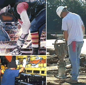

ERGONOMICS AND MUSCULOSKELETAL DISORDERS
 ShareCompartir
ShareCompartir

Ergonomics is the scientific study of people at work. The goal of ergonomics is to reduce stress and eliminate injuries and disorders associated with the overuse of muscles, bad posture, and repeated tasks. This is accomplished by designing tasks, work spaces, controls, displays, tools, lighting, and equipment to fit the employee´s physical capabilities and limitations.
Ergonomics Topics
NIOSHTIC-2 Search
NIOSHTIC-2 search results on Ergonomics and Musculoskeletal Disorders NIOSHTIC-2 is a searchable bibliographic database of occupational safety and health publications, documents, grant reports, and journal articles supported in whole or in part by NIOSH.
Recent Epidemiological Studies of Workplace Musculoskeletal Disorders
In the early 2000s, NIOSH funded 10 field-based studies to examine the exposure-response relationship between job physical risk factors and work-related musculoskeletal disorders. The studies focused on either the lower back or the upper extremity. Each of these studies addressed limitations of previous research on work-related musculoskeletal disorders by (1) having a prospective design; (2) making direct and quantitative measurements of job physical risk factors; (3) assessing psychosocial and work organization factors; (4) collecting self-reported symptoms; and (5) assessing musculoskeletal symptoms and disorders through physical examinations.
The results of many of these studies are compiled and published in a special issue of a peer-reviewed journal. These studies presented below collectively show a strong link between job physical exposures and work-related musculoskeletal disorders.
Lower Back
Efficacy of the Revised NIOSH Lifting Equation to predict risk of low-back pain associated with manual lifting: A one-year prospective study .
Human Factors 2014; 56(1):73-85.
The NIOSH Lifting Equation and low-back pain, Part 1: Association with low-back pain in the BackWorks prospective cohort study .
Human Factors 2014; 56(1):6-28.
The NIOSH Lifting Equation and low-back pain, Part 2: Association with seeking care in the BackWorks prospective cohort study .
Human Factors 2014; 56(1):44-57.
Low-back pain ratings for lifetime, 1-month period, and point prevalences in a large occupational population.
Human Factors 2014; 56(1):86-97.
Cumulative spine loading and clinically meaningful declines in low-back function .
Human Factors 2014; 56(1):29-43.
Are workers who leave a job exposed to similar physical demands as workers who develop clinically meaningful declines in low-back function ?
Human Factors 2014; 56(1):58-72.
Upper Extremity
A prospective study of musculoskeletal outcomes among manufacturing workers: I. Effects of physical work factors .
Human Factors 2014; 56(1):112-130.
A prospective study of musculoskeletal outcomes among manufacturing workers: II. Effects of psychosocial stress and work organization factors .
Human Factors 2014; 56(1):178-190.
The Strain Index and ACGIH TLV for HAL: Risk of trigger digit in the WISTAH prospective cohort .
Human Factors 2014; 56(1):98-111.
Evaluation of alternate category structures for the Strain Index: An empirical analysis .
Human Factors 2014; 56(1):131-142.
The impact of posture on wrist tendinosis among blue-collar workers: The San Francisco study .
Human Factors 2014; 56(1):143-150.
The association between combination of hand force and forearm posture and incidence of lateral epicondylitis in a working population .
Human Factors 2014; 56(1):151-165.
Using job-title-based physical exposures from O*NET in an epidemiological study of carpal tunnel syndrome .
Human Factors 2014; 56(1):166-177.
Impacts of differences in epidemiological case definitions on prevalence for upper-extremity musculoskeletal disorders .
Human Factors 2014; 56(1):191-202.
Scientific Support from Epidemiologic Research
Musculoskeletal Disorders and Workplace Factors: A Critical Review of Epidemiologic Evidence for Work-Related Musculoskeletal Disorders of the Neck, Upper Extremity, and Low Back
DHHS (NIOSH) Publication No. 97-141 (1997)
A comprehensive compilation and review of epidemiologic research on the relation between work-related musculoskeletal disorders of the neck, upper extremity, and low back and exposure to physical factors at work. It includes a bibliography and tables summarizing the literature.
Ergonomics Programs and Guidelines
Observation-Based Posture Assessment: Review of Current Practice and Recommendations for Improvement
DHHS (NIOSH) Publication No. 2014-131 (July 2014)
This document helps practitioners assess working posture for the prevention and control of occupational musculoskeletal disorders (MSDs). Studies of the relationship between risk factors (such as posture, repetition, and force) and resulting MSD prevalence have used various approaches to characterizing working posture, including observation-based methods. The document describes an observational approach for assessing postural stress of the trunk and upper limbs and is intended to improve risk analysis for prevention of musculoskeletal disorders. This document is a joint effort between NIOSH and the Canadian Centre of Research Expertise for the Prevention of Musculoskeletal Disorders (CRE-MSD).
Practical Demonstrations of Ergonomic Principles
DHHS (NIOSH) Publication No. 2011-191, RI 9684, (July 2011)
This document consists of a series of demonstrations designed to complement training on ergonomic principles. A description of the materials needed and step-by-step methodology are included in this document. Each demonstration highlights worker participation and uses relatively inexpensive materials.
Ergonomic Guidelines for Manual Material Handling
DHHS (NIOSH) Publication Number 2007-131 (April 2007)
This booklet will help you to recognize high-risk manual material handling (MMH) work tasks and choose effective options for reducing their physical demands.
Easy Ergonomics: A Guide to Selecting Non-Powered Hand Tools
DHHS (NIOSH) Publication Number 2004-164 (August 2004)
Non-powered hand tools are widely used in a variety of industries including construction, manufacturing, and agriculture. The purpose of this document is to help employers and workers identify non-powered hand tools that are less likely to cause injury--those that can be used effectively with less force, less repeated movement, and less awkward positioning of the body.
Elements of Ergonomics Programs. A Primer Based on Workplace Evaluations of Musculoskeletal Disorders
DHHS (NIOSH) Publication Number 1997-117 (March 1997)
This primer describes the basic elements of a workplace program aimed at preventing work-related musculoskeletal disorders. Management commitment, worker participation, and training are addressed along with procedures for identifying evaluating, and controlling risk factors for such disorders.
Ergonomics: Effective Workplace Practices and Programs
Individual transcripts of presentations from the 1997 Chicago Conference sponsored by NIOSH and OSHA. At the conference, over 1,000 attendees shared practical experiences in all aspects of workplace ergonomics programs. Dozens of presenters described real-world efforts aimed at preventing work-related musculoskeletal disorders. Each conference session focused on a specific industry, including construction, textiles, warehousing, healthcare, manufacturing, etc., or an important ergonomics program element, such as successful employee involvement.
National Occupational Research Agenda for MSDs: Next Decade of Research
DHHS (NIOSH) Publication No. 2001-117 (January 2001)
A research agenda developed by the National Occupational Research Agenda (NORA) Musculoskeletal Team. Information was compiled from focus groups consisting of practitioners and researchers. The document is organized to reflect the four areas of the NORA Team agenda: Surveillance research agenda, etiologic and medical research agenda, intervention research agenda, and improving the research process. Appendices give a detailed listing of all focus group responses.
A Strategy for Industrial Power Hand Tool Ergonomic Research - Design, Selection, Installation, and Use in Automotive Manufacturing[PDF - 4800 KB]
DHHS (NIOSH) Publication No. 95-114 (August 1995)
Proceedings for a workshop that was held in January 1994. This paper discusses the many variables to take into consideration when purchasing or designing hand tools, such as physical stressors, work performance, engineering requirements, human operator capabilities, and work station or task factors. A table of tool types, stressful tool conditions, and possible resulting risk factors is included. The final chapter is a discussion of possible engineering design issues (e.g., posture, force, gloves, center of gravity, tool activation, reaction torque, balancers) for reducing physical risk factors.
Ergonomic Interventions by Industry
Agriculture
Conference Proceedings: Prevention of Musculoskeletal Disorders for Children and Adolescents Working in Agriculture
DHHS (NIOSH) Publication Number 2004-119 (June 2004)
The research areas explored at the meeting included the identification of potentially high risk jobs; the quantification of the level of risk for jobs performed by children and adolescents in agriculture; the development, evaluation, and implementation of surveillance systems for measuring and tracking the magnitude of health effects and risks for children and adolescents working in agriculture; and the development and evaluation of ergonomic interventions for reducing risk of work-related musculoskeletal disorders for children and adolescents working in agriculture.
Simple Solutions: Ergonomics for Farm Workers.
DHHS (NIOSH) Publication Number 2001-111 (February 2001)
This pamphlet provides examples of early intervention to prevent musculoskeletal injuries among agricultural workers. It is directed toward growers, safety specialists, human resources managers—anyone with an interest in having safe farms.
Construction
Simple Solutions for Home Building Workers: A Basic Guide for Preventing Manual Material Handling Injuries
DHHS (NIOSH) Publication Number 2013-111 (June 2013)
This document provides basic information about readily available work practices and equipment that can help both new and experienced workers, contractors and builders prevent serious manual material handling injuries.
Simple Solutions: Ergonomics for Construction Workers
DHHS (NIOSH) Publication No. 2007-122 (August 2007)
Some of the most common injuries in construction are the result of job demands that push the human body beyond its natural limits. To aid in the prevention of these injuries, this booklet suggests many simple and inexpensive ways to make construction tasks easier, more comfortable, and better suited to the needs of the human body.
Proceedings of a Meeting to Explore the Use of Ergonomics Interventions for the Mechanical and Electrical Trades
DHHS (NIOSH) Publication No. 2006-119 (April 2006)
In 2002, NIOSH held a meeting involving researchers, contractors, and trades people representing the piping (or plumbing), heating and air-conditioning, electrical sectors of the U.S. construction industry. The document includes presentations describing work-related musculoskeletal disorder risk factors and injury or illness data for the mechanical and electrical trades, as well as ergonomics "best-practices" provided by stakeholders.
Healthcare
NIOSH Hazard Review: Occupational Hazards in Home Healthcare
DHHS (NIOSH) Publication No. 2010-105 (January 2010)
This document aims to raise awareness and increase understanding of the safety and health risks involved in home healthcare and suggests prevention strategies to reduce the number of injuries, illnesses, and fatalities that too frequently occur among workers in this industry.
Safe Patient Handling Training for Schools of Nursing. Curricular Materials
DHHS (NIOSH) Publication No. 2009-127 (November 2009)
This safe patient handling curricular material, developed cooperatively by NIOSH, the Veterans Health Administration (VHA), and the American Nurses Association (ANA), helps instructors design training programs that encourage the use of safe approaches to handling patients and contribute to the prevention of musculoskeletal disorders.
State of the Sector | Healthcare and Social Assistance: Identification of Research Opportunities for the Next Decade of NORA
DHHS (NIOSH) Publication No. 2009-139 (August 2009)
This document addresses the research needs of the occupational safety and health community within the Healthcare and Social Assistance (HCSA) industrial sector. Workers in the HCSA sector are exposed to a wide range of health and safety hazards including infectious, chemical, and physical agents; lifting and repetitive tasks (ergonomic hazards); stress (psychological hazards); workplace violence; and risks associated with suboptimal organization of work.
Preventing Work-Related Musculoskeletal Disorders in Sonography
DHHS (NIOSH) Publication No. 2006-117 (February 2006)
Sonographers are at risk for developing work-related musculoskeletal disorders. NIOSH recommends appropriate engineering controls, work practices, hazard communication, and training to prevent these work-related musculoskeletal disorders.
Safe Lifting and Movement of Nursing Home Residents
DHHS (NIOSH) Publication No. 2006-148 (September 2006)
This guide is intended for nursing home owners, administrators, nurse managers, safety and health professionals, and workers who are interested in establishing a safe resident lifting program. This guide also presents a business case to show that the investment in lifting equipment and training can be recovered through reduced workers' compensation expenses and costs associated with lost and restricted work days.
Mining
Ergonomics Processes: Implementation Guide and Tools for the Mining Industry
DHHS (NIOSH) Publication No. 2009-107, Information Circular 9509 (February 2009)
Three mining companies partnered with NIOSH to demonstrate that an ergonomics process could be systematically implemented and effectively integrated with existing safety and health programs. A description of how these three companies applied ergonomics and the tools and training used to implement their processes is given.
Reducing Low Back Pain and Disability in Mining
DHHS (NIOSH) Publication No. 2008-135, Information Circular 9507 (September 2008)
This report was written to provide better control measures for low back pain (LBP) and low back disability in the mining industry. The report draws attention to what is currently known about LBP, what the causes are thought to be, and discusses recent back injury trends in the mining industry. Methods that can be used to prevent initial LBP episodes are provided, including facilities design and layout for materials and supplies, use of mechanical-assist devices, improved design of lifting tasks, and better seat design. Methods of reducing the disability associated with LBP (including workplace design, proactive return-to-work efforts, communication, and management commitment) are also discussed.
Ergonomics and Risk Factor Awareness Training for Miners
DHHS (NIOSH) Publication No. 2008-111, Information Circular 9497 (July 2008)
The overall objective of this document is to help reduce injuries and illnesses resulting from exposures to risk factors. The training is designed specifically for the mining industry and should increase awareness of risk factors and encourage miners to take action to report and reduce their exposures to risk factors.
Ergonomics and Mining: Charting a Path to a Safer Workplace.
DHHS (NIOSH) Publication No. 2006-141, Information Circular 9491 (September 2006)
This document demonstrates that an ergonomics process can be implemented in a setting such as mining where working conditions frequently change and workers are periodically exposed to extreme weather conditions. This document describes how a coal mining company implemented an ergonomics process over a four-year period. The process developed by the ergonomics committee, the promotion of the process to management and employees, and the impacts of the process on working conditions at the mine are reviewed. Barriers overcome and lessons learned are also described.
Other
Ergonomic Solutions for Retail Workers
DHHS (NIOSH) Publication Number 2015-100 (October 2014)
Designed for retailers and safety experts, this NIOSH booklet has a goal to prevent manual material handling injuries in grocery stores. Manual material handling injuries, also called overexertion injuries, account for 60% of the injuries and lost work in select retail businesses. This 23-page booklet has 13 unique illustrations showing employees in a grocery store using various mechanical assist devices for material handling tasks.
Controlling the Ergonomic Hazards of Wiring Tasks for Household Appliances[PDF - 102 KB]
DHHS (NIOSH) Publication No. 98-108 (December 1997)
This pamphlet presents a hierarchy of four methods for reducing workers' physical risk factors for musculoskeletal disorders. The methods described are low-insertion force terminals, pneumatic hand tools, manual terminal insertion tools, and properly designed pliers.
Ergonomic Interventions for the Soft Drink Beverage Delivery Industry[PDF - 3129 KB]
DHHS (NIOSH) Publication No. 96-109 (1996)
This publication presents the results of an ergonomic study to investigate, identify, and reduce risk factors that may cause musculoskeletal disease and injury in the soft drink beverage delivery industry.
Participatory Ergonomic Interventions in Meatpacking Plants
DHHS (NIOSH) Publication No. 94-124 (1994)
This publication presents three case studies using intervention efforts to control ergonomic hazards found in the meatpacking industry.
Evaluating Risk Factors for Lifting Tasks
Clinical Guidelines for Occupational Lifting in Pregnancy: Evidence Summary and Provisional Recommendations
Empirically-based lifting criteria established by the National Institute for Occupational Safety and Health (NIOSH) to reduce risk of overexertion injuries in the general U.S. working population were evaluated for application to pregnant workers. This report proposes criteria to guide decisions by medical providers about permissible weights for lifting tasks performed at work over the course of an uncomplicated pregnancy. Our evaluation included an extensive review of the literature linking occupational lifting to maternal and fetal health. Although it has been 29 years since the American Medical Association’s (AMA) Council on Scientific Affairs published its report on the Effects of Pregnancy on Work Performance, these guidelines continue to influence clinical decisions and workplace policies. Provisional clinical guidelines derived from the NIOSH lifting criteria are presented that account for recent evidence for maternal and fetal health, and aim to improve the standard of care for pregnant workers.
Applications Manual for the Revised NIOSH Lifting Equation
DHHS (NIOSH) Publication No. 94-110
This publication includes the rationale and supporting criteria for the development of the revised NIOSH lifting equation and provides users with methods and examples for accurately applying the lifting equation to a variety of lifting tasks.
Back Belts and Back Injury
Summary of NIOSH Back Belt Studies (March 2002)(http://www.cdc.gov/niosh/beltsumm.html)
Abstract: The Effect of Wearing a Back Belt on Spine Kinematics During Asymmetric Lifting of Large and Small Boxes ( Spine - August 15, 2001; Vol. 26 No. 16)
This laboratory study evaluated the effects of an elastic back belt on spine kinematics during asymmetric lifting of large and small boxes.
No Evidence that Back Belts Reduce Injury Seen in Landmark NIOSH Study of Retail Users , CDC Press Release, December 6, 2000
A Prospective Study of Back Belts for Prevention of Back Pain and Injury(http://www.cdc.gov/niosh/jamapapr.html)
( Journal of the American Medical Association - December 6, 2000; Vol. 284 No. 21)
In the largest study of its kind ever conducted, NIOSH found no evidence that back belts reduce back injury or back pain for retail workers who lift or move merchandise.
Back Belts - Do They Prevent Injury(http://www.cdc.gov/niosh/backbelt.html)
DHHS (NIOSH) Publication No. 94-127
This non-technical publication describes what is known about the effectiveness of back belts and stresses the importance of an overall ergonomics program.
Workplace Use of Back Belts - Review and Recommendations(http://www.cdc.gov/niosh/94-122.html)
NIOSH Publication No. 94-122
This publication contains the report of a NIOSH Working Group that reviewed the scientific literature related to back belts. It includes summary conclusions and recommendations of the biomechanical, physiological, psychophysical, and epidemiologic studies published in the peer-reviewed literature.
Computer Keyboards & Video Display Terminals
Alternative Keyboards(http://www.cdc.gov/niosh/97-148.html)
NIOSH Publication No. 97-148
This non-technical publication provides basic information about common alternative keyboard designs and their effects on work posture.
NIOSH Publications on Video Display Terminals, Third Edition
DHHS (NIOSH) Publication No. 99-135 (September 1999)
Part I of this document consists of partial or full text of selected NIOSH documents on video display terminals (VDTs). This includes an overview of various occupational health issues, as well as information on topics relevant to VDT use, such as alternative keyboards, rest breaks, and glare. Part II contains a comprehensive bibliography of NIOSH documents on VDTs.
Vibration
Proceedings of the Second American Conference on Human Vibration, June 4-6, 2008, Chicago, Illinois.
DHHS (NIOSH) Publication No. 2008-123, Information Circular 9513, (June 2009)
This document provides papers on topics of interest such as human response, human modeling, experimental design, sensors, new technologies, and epidemiological studies of human responses to hand-transmitted and whole-body vibration.
Proceedings of the First American Conference on Human Vibration, June 5-7, 2006, Morgantown, West Virginia.
DHHS (NIOSH) Publication Number 2006-140 (June 2006)
This document presents the proceedings of the First American Conference on Human Vibration held in 2006. The meeting showcased recent research regarding the physiological effects of vibration. It explored the etiology of vibration-induced disorders and illuminated opportunities for their diagnoses, treatment, and prevention.
Criteria for a Recommended Standard: Occupational Exposure to Hand-Arm Vibration(http://www.cdc.gov/niosh/89-106.html)
DHHS (NIOSH) Publication No. 89-106
Examines the occupational health problems associated with the use of vibrating tools and provides criteria for reducing the risk of developing vibration-induced health problems.
Vibration Syndrome(http://www.cdc.gov/niosh/83110_38.html)
DHHS (NIOSH) Publication No. 83-110
Provides research that shows vibrating handtools can cause vibration syndrome, a condition also known as vibration white finger and as Raynaud's phenomenon of occupational origin. Vibration syndrome has adverse circulatory and neural effects in the fingers.
Other Resources
Worker Health eChartbook: Musculoskeletal conditions - Magnitude and trend
The eChartbook is a descriptive epidemiologic reference on occupational morbidity and mortality in the United States. A web-based resource for agencies, organizations, employers, researchers, workers, and others who need to know about occupational injuries and illnesses, the eChartbook includes more than 8,000 figures and tables describing the magnitude, distribution, and trends of the Nation's occupational injuries, illnesses, and fatalities.
Cumulative Trauma Disorders in the Workplace Bibliography
DHHS (NIOSH) Publication No.95-119 (1995)
Collects NIOSH research on CumulativeTrauma Disorders in the workplace.
NIOSH Alert: Preventing Knee Injuries and Disorders in Carpet Layers
DHHS (NIOSH) Publication No. 90-104
Includes research and recommendations to help prevent knee injury.
National Occupational Research Agenda (NORA)(http://www.cdc.gov/niosh/nora/default.html)
- National Occupational Research Agenda (NORA) Priority Research Area: Low Back Disorders
Features general information about low back disorders, project list, more...
- National Occupational Research Agenda (NORA) Priority Research Areas: Musculoskeletal Disorders of the Upper Extremities
Features general information about musculoskeletal disorders, project list, more...
The information for both can be found in The Team Document starting on page 27 through page 32.
Selected Topics in Surface Electromyography for Use in the Occupational Setting: Expert Perspective
DHHS (NIOSH) Publication No. 91-100
Basic instruction and information on the interpretations and applications of surface EMG.
Worker Protection: Private Sector Ergonomics Yield Positive Results [PDF - 2468 KB]
GAO REPORT HEHS-97-163
Musculoskeletal Disorders and the Workplace: Low Back and Upper Extremities (2001)
(National Research Council of the National Academy of Sciences)
Work-Related Musculoskeletal Disorders: A Review of the Evidence National Research Council of the National Academy of Sciences (1998) (National Research Council of the National Academy of Sciences)
- Page last reviewed: October 7, 2013
- Page last updated: May 10, 2016
- Content source:
- National Institute for Occupational Safety and Health Division of Applied Research and Technology